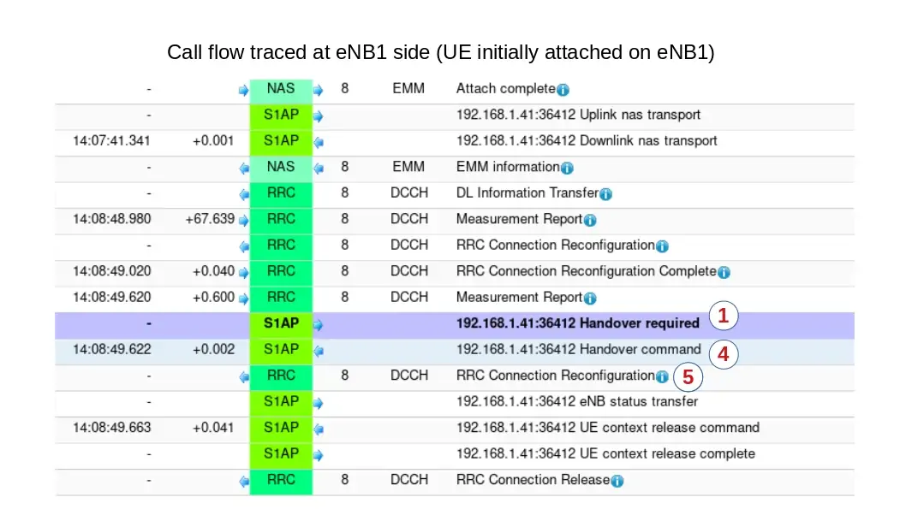
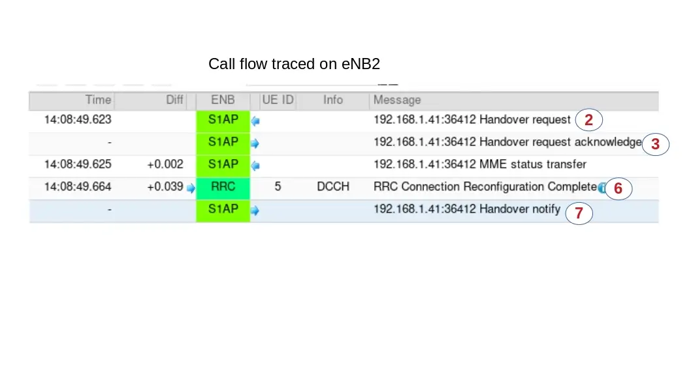

This application notes aims to provide the procedure for running intra and Inter eNB/gNB handover scenarios on Amarisoft products using commercial UE.
In the case where handover tests are run with Amarisoft UE simulator (instead of commercial UE), please See handover using UE simulator for UE prerequisites and parameters.
Setup is composed of :
In order to test Inter Frequency/Band handover between two cells running on same eNB, one or two SDR cards are required depending on the spectrum used by both cells.
PCIe SDR cards have a bandwidth of 56Mhz (USRP N2x0 is 40Mhz). By consequence, if both cells can fit in this bandwidth, handover can be carried out with one SDR only. Otherwise, two SDR cards are required.
In the example above, there is no overlap between the two cells neither in Uplink nor in downlink.
If a higher bandwidth had been used (20Mhz as instance), both cells would have overlapped, resulting in interference.
Others constraints:
prach-ConfigIndex (SIB2), i.e. their PRACH must have the same duration and transmitted in the same subframes.
n_id_cell property) and PRACH rootSequenceIndex (SIB2) are different to minimize the inter-cell interference. In the current version, there is no resource reservation among the cells, so a performance degradation happens if they transmit at the same time in the same resource blocks. So it is currently better to use cells at different frequencies.
Let’s take the following example to configure 3 cells in band 7:
cell 1 DL frequency: 2627 MHz cell 2 DL frequency: 2642 MHz cell 3 DL frequency: 2657 MHz average_dl_freq = (2627+2642+2657)/3 = 2642 MHz cell1_freq_offset = 2627-2642 = -15 MHz cell2_freq_offset = 2642-2642 = 0 MHz cell3_freq_offset = 2657-2642 = 15 MHz
We can observe that the difference between the center frequency of each cell and the average of center frequencies is indeed a multiple of 15 kHz and the difference between the DL EARFCNs are a multiple of 3.
For running intra eNB Handover, no specific configuration is required on MME side. Default configuration files can be used without customization
As described in previous section, it’s possible to configure two or more cells on the same SDR card as long as it fulfills the spectrum constraints. See constraints for more details.
In enb.cfg file, for each cell, set neighbour cell info using ncell_list parameters:
/* high 24 bits of SIB1.cellIdentifier */
enb_id: 0x1A2E0,
cell_list: [
{
dl_earfcn: 3350, /* DL center frequency: 2680 MHz (Band 7) */
n_id_cell: 1,
cell_id: 0x01,
tac: 0x0001,
root_sequence_index: 204, /* PRACH root sequence index */
/* Neighbour cell list (used for handover) */
ncell_list: [
{ n_id_cell: 2, dl_earfcn: 3299, cell_id: 0x1a2e002, tac: 1 },
],
},
{
dl_earfcn: 3299, /* DL center frequency: 2674.9 MHz (Band 7) */
n_id_cell: 2,
cell_id: 0x02,
tac: 0x0001,
root_sequence_index: 86, /* PRACH root sequence index */
/* Neighbour cell list (used for handover) */
ncell_list: [
{ n_id_cell: 1, dl_earfcn: 3350, cell_id: 0x1a2e001, tac: 1 },
],
},
], /* cell_list */
where:
n_id_cell is n_id_cell of neighbour cell
dl_earfcn is the downlink earfcn of neighbour cell
cell_id is the EUTRAN cell identifier (concatenation of the enb_id and cell_id of neighbour cell)
Please refer to lteenb.pdf for more details about cell list parameters
In order to trigger measurement reports (a1,a2 and a3) at UE side when cells level will fluctuate, set meas_config_desc parameters in enb.cfg file (under cell_default object) :
Example:
/* measurement configuration */
meas_config_desc: {
a1_report_type: "rsrp",
a1_rsrp: -70,
a1_hysteresis: 0,
a1_time_to_trigger: 640,
a2_report_type: "rsrp",
a2_rsrp: -80,
a2_hysteresis: 0,
a2_time_to_trigger: 640,
eutra_handover: {
a3_report_type: "rsrp",
a3_offset: 6,
hysteresis: 0,
time_to_trigger: 480
}
},
/* measurement gap configuration */
meas_gap_config: "gp0",
/* if true, initiate a handover when a suitable measurement report
is received */
ho_from_meas: true,
Please refer to lteenb.pdf for more details about meas_config_desc parameters
For Inter frequency/band handover two SDR cards may be required if spectrum used by both cells is larger than SDR bandwidth (56Mhz for PCIe SDR card) .
In that case, cell configuration is slightly different and rf_port used by each cell must be defined.
Others parameters (Neighbor cell info and Measurement configuration) remain identical.
Example:
cell_list: [
{
rf_port: 0, /* means that cell 0x01 will use dev0=/dev/sdr0 */
dl_earfcn: 3350, /* DL center frequency: 2680 MHz (Band 7) */
n_id_cell: 1,
cell_id: 0x01,
tac: 0x0001,
root_sequence_index: 204, /* PRACH root sequence index */
/* Neighbour cell list (used for handover) */
ncell_list: [
{ n_id_cell: 2, dl_earfcn: 3299, cell_id: 0x1a2e002, tac: 1 },
],
},
{
rf_port: 1, /* means that cell 0x02 will use dev1=/dev/sdr1 */
dl_earfcn: 3299, /* DL center frequency: 2674.9 MHz (Band 7) */
n_id_cell: 2,
cell_id: 0x02,
tac: 0x0001,
root_sequence_index: 86, /* PRACH root sequence index */
/* Neighbour cell list (used for handover) */
ncell_list: [
{ n_id_cell: 1, dl_earfcn: 3350, cell_id: 0x1a2e001, tac: 1 },
],
In config/rf_driver, both SDR cards must be defined as well. See trx_sdr.pdf for more details.
rf_driver: {
name: "sdr",
/* list of devices. 'dev0' is always the master. */
args: "dev0=/dev/sdr0,dev1=/dev/sdr1",
|
Note: When two SDR cards are used on same eNB, SDR1 must be connected to SDR0 through USB cable provided by Amarisoft in order to synchronize the Radio frames. See installguide.pdf for more details. |
In order to carry out handover based on UE measurement report, once enb is configured, the only thing to do is to decrease step by step cell gain at eNB side (command cell_gain cell_id gain on eNB screen) . Example : cell_gain 1 -20
|
Note: To perform handover and not a reselection, it’s recommended to run uplink or downlink transfer using iperf as instance in order to keep UE in RRC connected state |
In order to carry out blind handover, eNB command can be used. To do this:
ue command to identify UE id at eNB level (eNB_UE_ID)
handover command with the following parameters : eNB_UE_ID pci dl_earfcn type
Where :
intra here.
Example of handover command : handover 14 2 3299 intra
In order to test handover between two different eNB, some prerequisites must be fulfilled:
Note: MME component can be run on same PC as eNB. This will be the setup described in this document
Setup is composed of :
MME and both eNB connected through S1 interface
eNB1 and eNB2 connected through X2 interface
In order to connect both eNB to same MME, default (loopback) GTP address must be changed and replaced with IP address of PC where MME component is running.
in mme.cfg file, change :
gtp_addr: "127.0.1.100",
with
gtp_addr: "192.168.30.1",
|
Note: If another MME component is running on PC where eNB2 is running, this one must be turned off. |
This section aims to describe the modifications required on eNB to carry out inter eNB handover.
The initial setting of eNB (cell, earfcn , gain, SDR configuration, etc.. ) are not covered in this document.
Please refer to lteots.pdf document for more details on basic configurations.
In enb.cfg file, replace default (loopback) MME address with IP address of PC1 (192.168.30.1).
mme_list: [
{
/* address of MME for S1AP connection. Must be modified if the MME
runs on a different host. */
mme_addr: "192.168.30.1",
},
],
As for MME, default GTP address must be changed and replaced with IP address of the PC1 (instead of using loopback IP address).
However, as IP address of PC1 is already used by MME, it’s not possible to reuse it.
The solution is to create an IP alias (192.168.30.3 as instance) and use this alias as gtp_addr for eNB1.
To create the alias:
ifconfig command
ifconfig eth2:1 192.168.30.3/24
ifconfig command
|
Note: This hint is not needed if MME is running on its own PC and don’t have, as consequence, the same IP address as eNB1. |
Once the IP alias has been created , update enb.cfg file and replace default gtp_addr with this value
/* GTP bind address (=address of the ethernet interface connected to
the MME). Must be modified if the MME runs on a different host. */
gtp_addr: "192.168.30.3",
In order to connect both eNB through X2 interface, X2 peer IP address (eNB2) must be set .
In enb.cfg file , add the following parameter :
x2_peers:["192.168.30.2"],
Each eNB must have a unique ID. The default value is:
enb_id: 0x1A2D0
In enb.cfg file, set neighbour cell (eNB2 cell) info using ncell_list parameters:
cell_list: [
{
dl_earfcn: 3350, /* DL center frequency: 2680 MHz (Band 7) */
n_id_cell: 1,
cell_id: 0x01,
tac: 0x0001,
root_sequence_index: 204, /* PRACH root sequence index */
/* Neighbour cell list (used for handover) */
ncell_list: [
{ n_id_cell: 2, dl_earfcn: 6300, cell_id: 0x1A2D101, tac: 1 },
],
},
where:
n_id_cell is n_id_cell of eNB2 cell
dl_earfcn is the downlink earfcn of eNB2 cell
cell_id is the EUTRAN cell identifier (concatenation of the enb_id and cell_id of eNB2 cell)
In order to trigger measurement reports (a1,a2 and a3) at UE side when cells level will fluctuate, set meas_config_desc parameters in enb.cfg file (under cell_default object) :
Example:
/* measurement configuration */
meas_config_desc: {
a1_report_type: "rsrp",
a1_rsrp: -70,
a1_hysteresis: 0,
a1_time_to_trigger: 640,
a2_report_type: "rsrp",
a2_rsrp: -80,
a2_hysteresis: 0,
a2_time_to_trigger: 640,
eutra_handover: {
a3_report_type: "rsrp",
a3_offset: 6,
hysteresis: 0,
time_to_trigger: 480
}
},
/* measurement gap configuration */
meas_gap_config: "gp0",
/* if true, initiate a handover when a suitable measurement report
is received */
ho_from_meas: true,
Please refer to lteenb.pdf for more details about meas_config_desc parameters
As described in hardware prerequisite section, both eNB must be synchronized using a GPS clock antenna.
If PCIe SDR cards are used on your setup, the synchronization source must be changed.
In /root/enb/config/rf_driver folder, open config file used by enb.cfg file and uncomment sync parameter.
/* synchronization source: internal, gps, external (default = internal) */
sync: "gps",
Whith this modification, PCIe SDR card will get its clock from the GPS antenna.
As for eNB1 , in enb.cfg file, replace default (loopback) MME address with IP address of PC where MME component is running (192.168.30.1).
mme_list: [
{
/* address of MME for S1AP connection. Must be modified if the MME
runs on a different host. */
mme_addr: "192.168.30.1",
},
],
As both eNB are connected to same MME component, their ID must be different.
In enb.cfg file change enb_id to be different of eNB1
/* high 24 bits of SIB1.cellIdentifier */ enb_id: 0x1A2D1,
As for eNB1 , GTP address must be changed.
However, as there is no MME component on this PC (eNB2 only), the IP constraint encountered with eNB1 is not present and GTP address can be the one of PC2
/* GTP bind address (=address of the ethernet interface connected to
the MME). Must be modified if the MME runs on a different host. */
gtp_addr: "192.168.30.2",
As for eNB1, X2 peer IP address (eNB1) must be set.
In enb.cfg file, add the following parameter:
x2_peers:["192.168.30.1"],
As for eNB1, in enb.cfg file, set neighbour cell (eNB1 cell) info using ncell_list parameters:
cell_list: [
{
dl_earfcn: 6300, /* DL center frequency: 2680 MHz (Band 7) */
n_id_cell: 2,
cell_id: 0x01,
tac: 0x0001,
root_sequence_index: 204, /* PRACH root sequence index */
/* Neighbour cell list (used for handover) */
ncell_list: [
{ n_id_cell: 1, dl_earfcn: 3350, cell_id: 0x1A2D001, tac: 1 },
],
},
where:
n_id_cell is n_id_cell of eNB1 cell
dl_earfcn is the downlink earfcn of eNB1 cell
cell_id is the EUTRAN cell identifier (concatenation of the enb_id and cell_id of eNB1 cell),
As for eNB1 , in enb.cfg file, under cell_default object, set meas_config_desc parameters:
Example :
/* measurement configuration */
meas_config_desc: {
a1_report_type: "rsrp",
a1_rsrp: -70,
a1_hysteresis: 0,
a1_time_to_trigger: 640,
a2_report_type: "rsrp",
a2_rsrp: -80,
a2_hysteresis: 0,
a2_time_to_trigger: 640,
eutra_handover: {
a3_report_type: "rsrp",
a3_offset: 6,
hysteresis: 0,
time_to_trigger: 480
}
},
/* measurement gap configuration */
meas_gap_config: "gp0",
/* if true, initiate a handover when a suitable measurement report
is received */
ho_from_meas: true,
Please refer to lteenb.pdf for more details about meas_config_desc parameters
GPS of PCIe SDR card on eNB1 and eNB2.
Once connection is done, you can check if GPS clock is locked. To do this :
/root/trx_sdr folder
./sdr_util -c 0 gps_state
GPS locked
TAI: 2018-11-20 16:18:29
UTC: 2018-11-20 16:17:52
|
Note: The GPS takes a few minutes to lock if the GPS antenna is connected. |
Once eNB1,eNB2 and MME have be configured, you can start each component and check the connections.
enb command. Both eNB should be listed
s1 command. S1 connection state should be "setup_done"
x2 command. X2 Peer connection state should be "setup_done"
x2connect command and check again with x2 command afterwards.
Your setup is now completed ! You can connect your UE and run handover test .
In order to carry out Handover based on UE measurement report, the only thing to is to decrease step by step cell gain at eNB side (command cell_gain cell_id gain on eNB screen) . Example : cell_gain 1 -20
To trigger a S1 handover rather than X2, just remove the x2_peers connection in eNB configuration files
|
Note: To perform Handover and not a reselection, it’s recommended to run uplink or downlink transfer with iperf as instance in order to keep UE in RRC connected state |
In order to carry out blind X2 or S1 handover, eNB command can be used. To do this:
ue command to identify UE id at eNB level (eNB_UE_ID)
handover command with the following parameters : eNB_UE_ID pci dl_earfcn type
Where :
Example of X2 handover command : handover 14 2 3350 x2
When Amarisoft UE simulator is used for testing handover, two SDR cards are required. SDR1 card will be connected to cell 1, SDR2 card will be connected to cell 2.
In ue.cfg file, both cells must be declared
Example :
cells: [
{
dl_earfcn: 6300,
n_antenna_dl: 2,
n_antenna_ul: 1,
},
{
dl_earfcn: 3350,
n_antenna_dl: 2,
n_antenna_ul: 1,
},
],
On top of that, SDR mapping must be defined :
Example :
rf_driver: {
name: "sdr",
args: "dev0=/dev/sdr0,dev1=/dev/sdr1",
},
The mapping between Cells and SDR cards is made automatically and follows the same order as the declaration in the configuration file.
The example here above results in:
The RF connection must be done accordingly.
For 5G SA handover similar concepts apply, for that please refer to the provided example configuration file ue-nr-2cc-sa.cfg.
|
Note: When two cells are declared on UE side, both cells must be active otherwise UE will remain in SIB detection state indefinitely |
In order to help the investigation, here are the expected call flows of handover scenario
Sent by eNB to UE to configure measurement report events
Three event reports a1, a2, a3 are configured in RRC Connection Reconfiguration
Two event reports a2, a3 are activated
Example of a1 report configuration within RRC Connection Reconfiguration message:
reportConfigToAddModList {
{
reportConfigId 1,
reportConfig reportConfigEUTRA: {
triggerType event: {
eventId eventA1: {
a1-Threshold threshold-RSRP: 90
},
hysteresis 0,
timeToTrigger ms640
},
triggerQuantity rsrp,
reportQuantity both,
maxReportCells 1,
reportInterval ms120,
reportAmount r1
}
Sent by UE to eNB when the serving cell becomes worse than a threshold
message c1: measurementReport: {
criticalExtensions c1: measurementReport-r8: {
measResults {
measId 2,
measResultPCell {
rsrpResult 79,
rsrqResult 34
}
}
a2 meas report, network reconfigures UE event report (deactivate a2, activate a1 and activate Measurement Gap) through RRC Connection Reconfiguration message
a3 meas report, network trigger the Handover through X2 interface
message c1: measurementReport: {
criticalExtensions c1: measurementReport-r8: {
measResults {
measId 3,
measResultPCell {
rsrpResult 79,
rsrqResult 34
},
measResultNeighCells measResultListEUTRA: {
{
physCellId 2,
measResult {
rsrpResult 90,
rsrqResult 34
}
RRCconnectionReconfiguration.
mobilityControlInfo {
targetPhysCellId 2,
carrierFreq {
dl-CarrierFreq 3350
},
RCC Connection Reconfiguration Complete on the target cell (eNB2)
Traffic should be now resumed on target cell.
S1 inter eNB handover has the same call flow as X2 handover when it comes to the messages exchanged between UE and eNB (See X2 handover call flow for more details).
The main difference is on the Handover procedure at eNB side. Handover request is sent to MME through S1 interface and not to peer eNB through X2 interface.
 Handover required to MME.
The source eNodeB indicates which bearers are subject to data forwarding.
Handover Request message to the target eNodeB. This message creates the UE context in the target eNodeB, including information about the bearers, and the security context
Handover Request Acknowledge message. This message carries the Handover Command message (RRC Connection Reconfiguration Request) in a transparent container
RRC Connection Reconfiguration message to the UE.
The message contains a new C-RNTI and new DRB IDs. Upon reception of this message the UE will remove any EPS bearers for which it did not receive the corresponding EPS radio bearers in the target cell.
RRC Connection Reconfiguration Complete (Handover Confirm message)
Amarisoft software supports intra gNB, XnAP and NGAP Handover.
The gNodeB can run several NR cells. The cells can be configured individually and share the same NG interfaces with the Core Network.
Cells can be configured on one (intra-band) or several (intra/inter band) SDR cards. Refer to lteenb.pdf, section 7.6.1, for limitations related to intra-band cells configured on the same SDR card.
An example of multi cell configuration for SA handover is given in config/gnb-sa-ho.cfg.
For each cell, a list of neighbor cells can be provided as in the example below:
ncell_list:
[
{
rat: "nr",
cell_id: 0x02,
}
],
where cell_id is the cell_id of the neighbor cell.
The handover can be manually initiated with the handover monitor command, the handover remote API, or automatically initiated based on UE measurements.
In case of handover based on UE measurement reports, a measurement object can be configured as in the example below:
/* measurement configuration */
meas_config_desc: {
a1_report_type: "rsrp",
a1_rsrp: -60,
a1_hysteresis: 10,
a1_time_to_trigger: 100,
a2_report_type: "rsrp",
a2_rsrp: -70,
a2_hysteresis: 0,
a2_time_to_trigger: 100,
nr_handover: {
a3_report_type: "rsrp",
a3_offset: 6,
hysteresis: 0,
time_to_trigger: 100
}
},
meas_gap_config: {
pattern_id: 0
},
For handover procedure triggered by UE measurement report refer to Handover triggered by UE measurement report.
To perform blind intra gNB handover triggered by gNB, the handover command or remote API can be used, refer to lteenb.pdf for more details.
The same prerequisites as per inter-eNB Prerequisites apply.
In case of inter gNB Handover (XnAP or NGAP), each gNB runs on a different host and they are both connected to the same AMF. AMF can run on one of the gNB machine or on a third one. The gtp_address defined in each gNB configuration has to be set to the address of the ethernet interface connected to the AMF.
/* GTP bind address (=address of the ethernet interface connected to
the AMF). Must be modified if the AMF runs on a different host. */
gtp_addr: "192.168.30.1",
As both gNBs are connected to same AMF component, their ID must be different.
Use a unique gnb_id on each configuration file.
gnb_id: 0x12345,
Each gNB configuration must define the serving cell and a list of fully described neighbor cells, as in the example below:
nr_cell_list: [
{
rf_port: 0,
cell_id: 0x01,
n_id_cell: 500,
band: 78,
dl_nr_arfcn: 621300,
ncell_list: [
{
ssb_nr_arfcn: 525850,
dl_nr_arfcn: 526000,
ul_nr_arfcn: 502000,
n_id_cell: 501,
gnb_id_bits: 28,
nr_cell_id: 0x1234502,
tac: 1,
band: 7,
ssb_subcarrier_spacing: 15,
ssb_period: 5,
ssb_offset: 0,
ssb_duration: 1
}],
}
Refer to lteenb.pdf for more details about each parameter.
To perform XnAP handover, a Xn connection between the gNBs is needed, for that xn_peers parameter has to be set to the ip address of the other gNB (refer to lteenb.pdf).
xn_peers:["192.168.30.2"],
If this interface is not connected, NGAP handover is performed.
The handover can be manually initiated with the handover monitor command, the handover remote API, or automatically initiated based on UE measurements.
In case of handover based on UE measurements, the same measurement configuration as for intra gNB handover can be used on both gNB.
/* measurement configuration */
meas_config_desc: {
a1_report_type: "rsrp",
a1_rsrp: -60,
a1_hysteresis: 10,
a1_time_to_trigger: 100,
a2_report_type: "rsrp",
a2_rsrp: -70,
a2_hysteresis: 0,
a2_time_to_trigger: 100,
nr_handover: {
a3_report_type: "rsrp",
a3_offset: 6,
hysteresis: 0,
time_to_trigger: 100
}
},
meas_gap_config: {
pattern_id: 0
},
To trigger an handover based on UE measurement report refer to Handover triggered by UE measurement report.
For details about handover monitor and remote API command refer to lteenb.pdf.
This chapter aims to list some basic checks to be done when handover is not carry out as expected.
Before to start handover testing, you must check first that UE can connect on each eNB/gNB independently and run Uplink/Downlink transfer.
If UE can’t attach, check that:
s1 command on eNB screen. S1 connection state should be "setup_done"
xn command on eNB screen. Xn connection state should be "setup_done"
./sdr_util gps_state command under /root/trx_sdr folder (LTE service must be turned off previously) . If GPS clock is locked, date and time will be displayed
If measurement reports are not sent by UE, check that :
If after handover, UE is not seen on target cells check that
This message may happen if both cells running on two different SDR cards of same enB are not synchronized. In that case, check that USB cable is connected between OUT and IN of master and slave SDR card respectively. See installguide.pdf for more details.